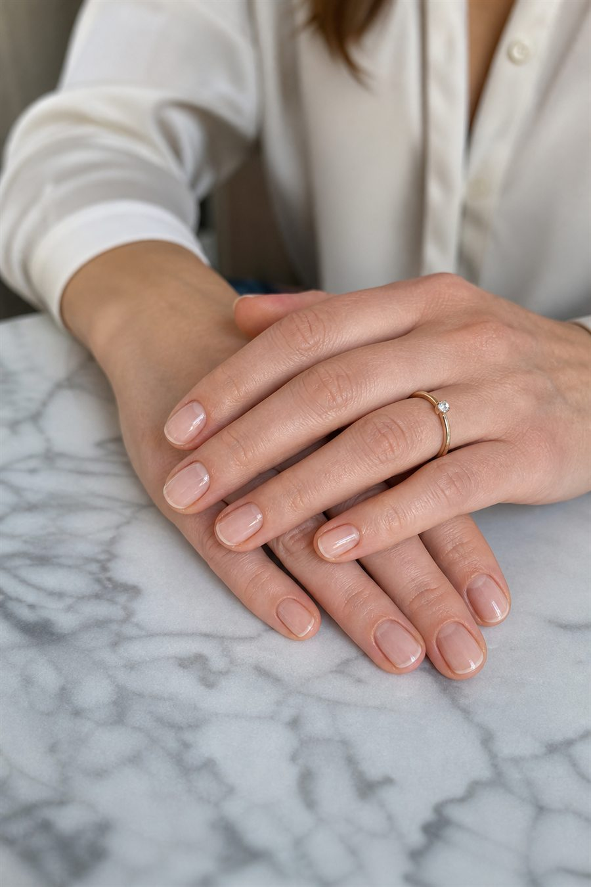
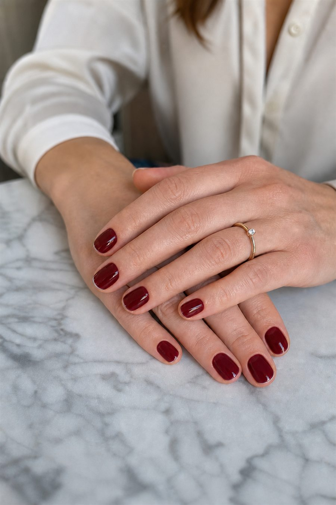

Промтзилла
Как поменять цвет ногтей на фото с помощью ИИ
Нейросеть онлайн может аккуратно перекрасить только ногти: кожа, форма пальцев, украшения, свет и фон остаются как на исходном фото.
Пошаговая инструкция
- 1Загрузи вертикальное фото рук, где ногти хорошо видны и не перекрыты предметами.
- 2Укажи новый оттенок в плейсхолдере {{НОВЫЙ_ЦВЕТ_НОГТЕЙ}}.
- 3Добавь финиш: {{ФИНИШ_ЛАКА}} — глянец, матовый, перламутр, френч или нюд.
- 4Попроси ИИ менять только поверхность ногтей, без изменения формы пальцев и кожи.
- 5Сравни результат с исходником и попроси усилить реалистичные блики, если цвет выглядит плоско.
Пример

ДоИсходное фото с натуральными ногтями.

ПослеНогти перекрашены, а кожа и фон сохранены.
Промпт
RU
Загружаю фото рук. Нужно поменять цвет ногтей.
Новый цвет ногтей: {{НОВЫЙ_ЦВЕТ_НОГТЕЙ}}
Финиш лака: {{ФИНИШ_ЛАКА_ГЛЯНЕЦ_МАТОВЫЙ_ПЕРЛАМУТР_ФРЕНЧ}}
Интенсивность оттенка: {{ИНТЕНСИВНОСТЬ}}
Требования:
- меняй только ногтевые пластины
- не меняй кожу, форму пальцев, украшения, фон и освещение
- сохрани естественные блики лака и объём ногтей
- цвет должен выглядеть как реальный маникюр на этом фото
- без лишнего текста, рамок и водяных знаков
EN
I am uploading a photo of hands. Change the nail color only.
New nail color: {{NEW_NAIL_COLOR}}
Polish finish: {{POLISH_FINISH_GLOSSY_MATTE_PEARL_FRENCH}}
Color intensity: {{INTENSITY}}
Requirements:
- edit only the nail plates
- do not change skin, finger shape, jewelry, background or lighting
- keep realistic polish highlights and nail volume
- the color must look like a real manicure in this photo
- no extra text, frames or watermarks
Теги
Эта страница подходит для работы онлайн: промпт можно использовать с ИИ и нейросетью, а плейсхолдеры заменить под свою задачу.